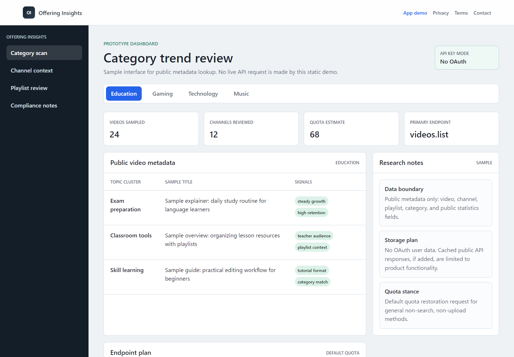

Pick a category
Select a research category and review sample public videos and channels.
Prototype for public video research
A lightweight dashboard for reviewing public video, channel, playlist, and category metadata while keeping API access narrow and auditable.

What it does
Offering Insights is built for category-level research and editorial planning. The prototype presents public metadata in a workspace that makes source, endpoint, and quota assumptions visible.
Select a research category and review sample public videos and channels.
Read title, channel, playlist, category, publication, and public statistics context.
Use the structured view to prepare editorial or market research notes.
API usage
The first version is designed to read public metadata. It does not upload videos, edit channels, moderate comments, or access private account data.
Retrieve public video metadata, statistics, category IDs, and publication details.
Review public channel metadata needed for source context and editorial comparison.
Read public playlist membership for curated sets and channel playlist research.
Map category IDs to readable category names for category-level analysis.
Compliance posture
The prototype uses approved API methods, avoids scraping, and documents privacy and terms links for review.